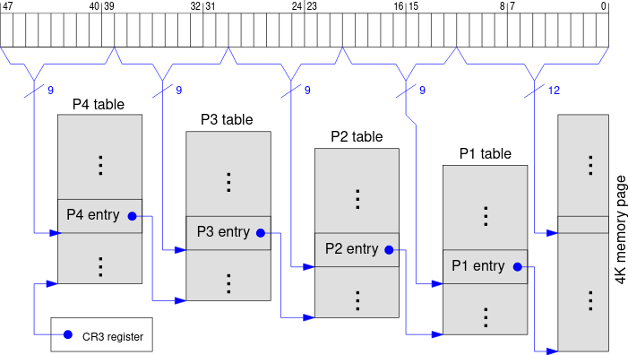

Minimalny kernel - Part 1
Wprowadzenie
W momencie uruchomienia komputera BIOS wykonuje self test i rutyny inicjalizacyjne. Następnym krokiem jest przekazanie kontroli do bootloadera. Bootloader zajmuje się przejściem procesora w 32 bit protected mode (ponieważ procesor bootuje w 16 bit real mode) a następnie znajduje kernel na nośniku urządzenia i ładuje go do pamięci .
My nie będziemy pisać bootloadera, jest to zbyt skomplikowane i czasochłonne, zamiast tego użyjemy GRUB2.
Struktura projektu
|---Makefile
|---build
| | ...
|---src
|---boot.asm
|---multiboot_header.asm
|---linker.ld
|---grub.cfg
Multiboot
Na szczęście istnieje standardowy bootloader: multiboot.
Aby użyć bootloader-a multiboot musimy zacząć pisanie naszego kernela od nagłówka składającego się z następujących pól
| Pole | Typ | Wartość |
|---|---|---|
| magic number | uint32 | 0xE85250D6 |
| architecture | uint32 | 0 dla i386 |
| header length | uint32 | długość headera |
| checksum | uint32 | -(magic + architecture + header_length) |
| tags | nie zdefiniowane | wartości są różne w zależności od zastosowania |
| end tags | (uint16, uint16, uint32) | (0,0,8) - tag kończący kernel |
Konwertując do assembly x86:
plik: src/multiboot_header.asm
section .multiboot_header
header_start:
; liczba magiczna
dd 0xe85250d6
; architektura 0 - tryb protected i386
dd 0
; długość headera - używana przez multiboot do sprawdzenia sumy kontrolnej
dd header_end - header_start
; suma kontrolna - informuje bootloader o poprawnym działaniu
dd 0x100000000 - (0xe85250d6 + 0 + (header_end - header_start))
; opcjonalne tagi (inocjacja FPU lub SSE)
; tagi końcowe
dw 0 ; type
dw 0 ; flags
dd 8 ; size
header_end:
- header_start i header_end - są to tagi (label) w pliku dzięki którym assembler będzie za nas określał długość headera
- dd - 'define double' określa dowolną zmienną 32 bitową która będzie bezpośrednio wkompilowana w binarkę
- dw - 'define word' to samo co dd tylko dla 16 bitów
Boot
Aby nasz kernel mógł wystartować musi istnieć jakiś kod który będzie mógł być wywołany przez multiboot
plik: src/boot.asm
; definicja miejsca zaczęcia programu
global start
section .text
; informacja dla kompilatora o tym że wszystkie poniższe instrukcje
; muszą być zakodowane w systemie 32 bitowym, stało rozmiarowym
bits 32
start:
; wypisanie "OK" na ekranie
mov dword [0xb8000], 0x2f4b2f4f
; hlt - halt
; zatrzymuje działanie procesora
hlt
Wypisanie "OK" - wypisanie czegokolwiek na tym etapie polega na manualnym wpisywaniu danych do buforu VGA, docelowo napiszemy do tego minimalny driver monolityczny (wbudowany w jądro).
Instrukcja mov dword [addr], data powoduje wpisanie danych o rozmiarze dword (32 bit) do podanego adresu. W tym przypadkiem adresem 'addr' jest 0xb8000, czyli adres buforu VGA, nastomiast dane to zakodowany w odpowiedni sposób tekst wraz z kolorami. Jeden znak w tekście defuniuje się jako 4 bity koloru tła, 4 bity koloru tekstu, 8 bitów znaku ASCII. Powyższy tekst jest zakodowany w następujący sposób:
- 2f - biały znak z zielonym tłem
- 4b - O
- 2f - ponownie biały znak z zielonym tłęm
- 4f - K
Kompilacja
W celu automatyzacji kompilacji przygotowałem następujący Makefile w który nie będę się zagłębiał.
Natomiast zwrócę uwagę na pliki linker.ld oraz krótko do czego służy grub.cfg
plik: src/linker.ld
ENTRY(start)
SECTIONS {
. = 1M;
.boot :
{
/*
umieszczenie sekcji multiboot na początku programu
z tego momentu zaczyna się działanie systemu
*/
*(.multiboot_header)
}
.text :
{
/*
główna sekcja programu
*/
*(.text)
}
}
Plik linker.ld definiuje nam w jakie miejsca jest wstawiana która częśc programu. Na poczatku mamy . = 1M; jest to ignorowanie pierwszego MiB miejsca na nośniku, ponieważ znajdują się tam specjalne adresy. Następnie mamy sekcję .boot w której będzie informacja o standardzie multiboot a dopiero na końcu przechodzimy do właściwego kernela w sekcji .text.
plik: src/grub.cfg
set timeout=0
set default=0
menuentry "os" {
multiboot2 /boot/kernel.bin
boot
}
Ten plik definiuje nam w jaki sposób ma być stworzony plik ISO naszego systemu. menuentry oznacza nazwę która będzie się pojawiać w tabeli grub2, następnie w klamerkach definiujemy ścieżkę do binarki kernela oraz w następnej linijce nazwę punktu wejścia.
Testy poprawnego bootowania - Part 2
Wprowadzenie
Jesteśmy już w trybie protected oraz posiadamy kontrolę nad tym co robi procesor. Mogli byśmy już przechodzić do trybu 64 bitowego, ale procesory mają to do siebie że mają różne specyfikacje, funkcjonalności, oraz zestawy instrukcji.
Z tego powodu musimy napisać odpowiednie testy które pozwolą na poprawne przejście do trybu 64 bit a w przeciwnym razie HALT procesora.
Struktura projektu
Struktura projektu pozostaje bez zmian względem poprzedniej części. W następnej przeniesiemy check-i do oddzilenych plików
Inicjacja stosu
Do wykonania niektórych testów będziemy potrzebować stosu, niestety nie mamy pod nami systemu który może nam przydzielić pamięć a więc musimy sami zdecydować ile jej potrzebujemy i zadeklarować tą ilość w sekcji .bss
plik: src/boot.asm
section .bss
stack_bottom:
resb 64
stack_top:
Tagi stack_bottom i stack_top ułatwiają nam znalezienie granic stosu, na ten moment rezerwujemy tylko 64 bajty, potem będziemy modyfikować tą wartośc.
Teraz musimy zainicjować ESP aby móc używać instrukcji służących do wypychania i ściągania danych ze stacku.
plik: src/boot.asm
...
start:
; w procesorach potomnych dla i386 stack zaczyna się od jego góry i kończy na spodzie
mov esp, stack_top
...
Test Multiboot
Test ten jest odpowiedzialny za sprawdzenie czy system został odpalony z użyciem multiboot (grub), jest to ważne ponieważ potem można wykorzystywać informację o tym do pozyskania dodatkowych informacji o dostępnym sprzęcie.
Z dokumentacji możemy się dowiedzieć że multiboot na zakończenie swojej pracy ładuje do rejestru EAX wartość 0x36d76289, jeśli jest tam inna wartość to nastąpił jakiegoś rodzaju błąd lub nie kernel nie został uruchomiony z użyciem multiboot
plik: src/boot.asm
multiboot_check:
cmp eax, 0x36d76289
; jeśli EAX nie jest równe powyższej wartości to przechodzimy do błędu procesora
jne .multiboot_error
ret
; jeśli procedura nie zadziała poprawnie musimy zgłosić błąd
.multiboot_error:
mov al, "M"
call error
Test CPUID
Sprawdzenie obecności CPUID wykonuje się poprzed obrót bitu 21 w rejestrze FLAGS. Jeżeli uda nam się poprawnie obrócić bit, wpisać wartość do rejestru FLAGS i pobrać ją ponownie i w trakcie tej operacji bit 21 wróci do swojego początkowego stanu to zestaw instrukcji CPUID jest dostępny.
plik: src/boot.asm
cpuid_check:
; skopiowane FLAGS do EAX używając stack-u
; pushfd wypycha FLAGS na stack
pushfd
pop eax
; kopiowanie FLAGS z EAX do ECX
mov ecx, eax
; obrócenie bitu 21
xor eax, 1 << 21
; ustawienie rejestru FLAGS na wartość z EAX z obróconym bitem 21
push eax
popfd
; ponowne skopiowanie FLAGS do EAX, jeśli bit się obrócił z powrotem to posiadamy CPUID
pushfd
pop eax
; przywrócenie początkowej wersji rejestru FLAGS
push ecx
popfd
; jeżeli EAX i ECX są równe to znaczy że bit 21 nie został obrucony co znaczy że nie posiadamy CPUID
cmp eax, ecx
je .cpuid_error
ret
.cpuid_error:
mov al, "C"
jmp error
Test Longmode
Ostatnim krokiem dla nas jest sprawdzenie czy dostępny jest tryb 64 bitowy. Wywołująć instrukcję cpuid z argumentem 0x80000000 spowoduje sprawdzenie maksymalnej dostępnej wersji CPUID w naszym procesorze, dla naszych potrzeb wystarczy wersja 0x80000001.
Instrukcja Cpuid z argumentem 0x80000001 ładuje do głównych 4 rejesetrów dużo informacji na temat procesora, w tym informacje o dostępnych trybach działania oraz posiadanych zestawach instrukcji. Po wywołaniu tej instrukcji w rejestrze EDX na bicie 29 znajduje się informacja czy longmode jest dostępny.
plik: src/boot.asm
long_mode_check:
; sprawdzenie czy rozszerzone informacje o pocesorze są dostępne
mov eax, 0x80000000
cpuid
; minimalna wersja z longmode to 0x80000001, jeśli jest mniej to wywołujemy błąd
cmp eax, 0x80000001
jb .long_mode_error
; sprawdzenie czy longmode jest dostępny
; argument dla CPUID do uzyskania rozszezrzonych informacji
mov eax, 0x80000001
cpuid
; sprawdznie czy LM-bit jest ustawiony w EDX, jeśli nie to wywołujemy błąd
test edx, 1 << 29
jz .long_mode_error
ret
.long_mode_error:
mov al, "L"
jmp error
Wykorzystanie testów
Testy już są napisane teraz trzeba je wywołać w odpowiedniej kolejności.
- Multiboot
- CPUID
- Longmode
A więc po ich dodaniu w start będzie wyglądał następująco:
plik: src/boot.asm
...
start:
; w procesorach potomnych dla i386 stack zaczyna się od jego góry i kończy na spodzie
mov esp, stack_top
; wywołanie procedury sprawdzenia multiboot
call multiboot_check
; wywołanie procedury sprawdzenia CPUID
call cpuid_check
; wywołanie prrocedury sprawdzenia longmode
call long_mode_check
...
Uruchomienie
Jeżeli wszystko zadziałało poprawnie, po wykonaniu komendy make run powinniśmy zobaczyć taki obraz w maszynie:

Paging - Part 3
Paging, jest to metoda zarządzania pamięcią która oddziela pamięć wirtualną od pamięci fizycznej. Przestrzeń adresowa jest podzielona na równego rozmiaru "strony" i page table definiuje który adres wirtualny odpowiada kßórego madresowi fizycznemu.
W x86_64 rozmair strony to 4096 bajtów i 4 poziomiwe "strony", każda ze "stron" posiada 512, 8 bajtowych sektorów.

Struktura sektoru strony
| Bity | Nazwa | Opis |
|---|---|---|
| 0 | present | strona znajduje się w pamięci |
| 1 | writable | można zapisać do strony |
| 2 | user accesible | dostępna na poziomie urzytkownika |
| 3 | write through caching | bezpośredni zapis |
| 4 | no cache | nie urzywaj pamięci cache |
| 5 | accesed | CPU ustawia ten bit kiedy strona jest w użyciu |
| 6 | dirty | CPU ustawia ten bit kiedy strona jest w trakcie zapisu |
| 7 | huge page/null | strona rozszerzona do 2MB w Page Level 2 i do 1 GB w Page Level 3 |
| 8 | global | strona nie jest zapisywana jeśli znajduje się w pamięci cache |
| 9-11 | available | dostępne dla systemu |
| 12-52 | - | pominięte, ze względu na unikalnośc adresów |
| 52-62 | available | dostępne dla systemu |
| 63 | no execute | zakaz wykonywania kodu z tej strony (bit NXE) |
Ograniczenia
Używając bitu huge page na stronach poziomu trzeciego moglibyśmy mapować pierwszy 1GB naszego kernela do pojedyńczej strony co bo znacznie poprawiło jego responsywność i pozwoliło procesorowi na ustalenie lepszych zasad cache-owania. Niestety nie możemy tego zrobić ponieważ huge page na L3 został wprowadzony dopiero w generacji Westmere (seria Xeon), Haswell (seria Core I 4 gen), a więc aby zagwarantować kompatybilnośc z starszymi procesorami i maszynami wirtualnymi będziemy stosować bit huge page na stronach L2
Strony są przeszukiwane idąc od L4 do L1, przez co najpierw jest przeszukiwana najdawniej alokowana pamięć.
Paging nie oznacza możliwości alokacji na heap. Do tego trzeba dalej napisać alokator (nie będziemy tego robić).
Paging nie jest zawsze taki sam, w przypadku bardzo dużej ilości pamięci inaczej się rozkłada strony. Są również bardziej zaawansowane metody translacji adresów.
Paging jest ściśle wymagany przez tryb 64 bitowy, bez niego procesor nie wejdzie w ten tryb i wykona przerwanie które kończy się instrukcją halt.